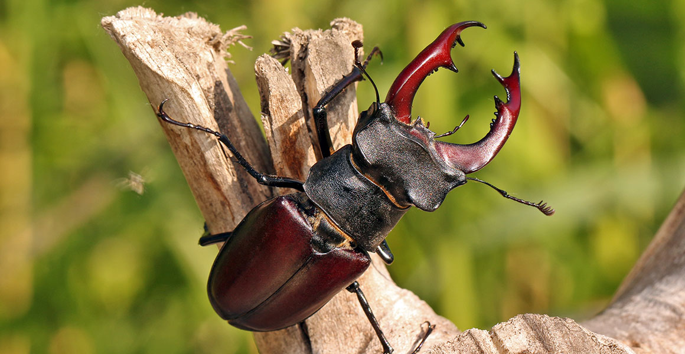
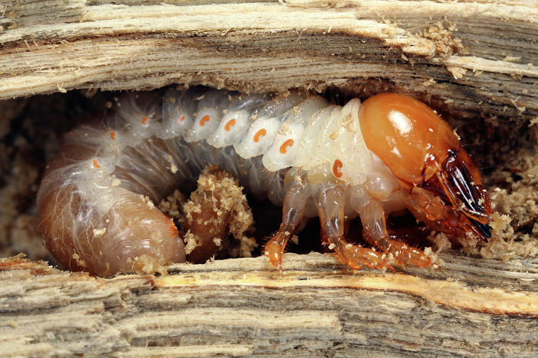

Ecology
Common east of the Mississippi, Stag Beetles are noted for their large size and ferocious appearance. A durable exoskeleton and imposing, pincer-like mandibles on males imply aggression, but this is not an accurate reflection of the beetle. The mandibles on the male are generally reserved for male-to-male combat when it comes time to woo a female Stag Beetle. The winning male gets the opportunity to mate. Among males, younger males have shorter mandibles than older ones. The mandibles on the female are much shorter than that of the male, which can be as large as their heads. Its exoskeleton appears smooth and glossy and has a rich dark red or brown hue to it. This species is different from other Stag Beetles thanks in part to the orange or yellow coloring at the base of each leg.
They are primarily night dwellers and - like most nocturnal insects - are generally attracted to light sources at night. Despite the large mouth parts, the Stag Beetle lives on a steady diet of sap. Females lay fertilized eggs on dead trees or stumps. The grubs hatch and mature in the rotting wood.©InsectIdentification.org

